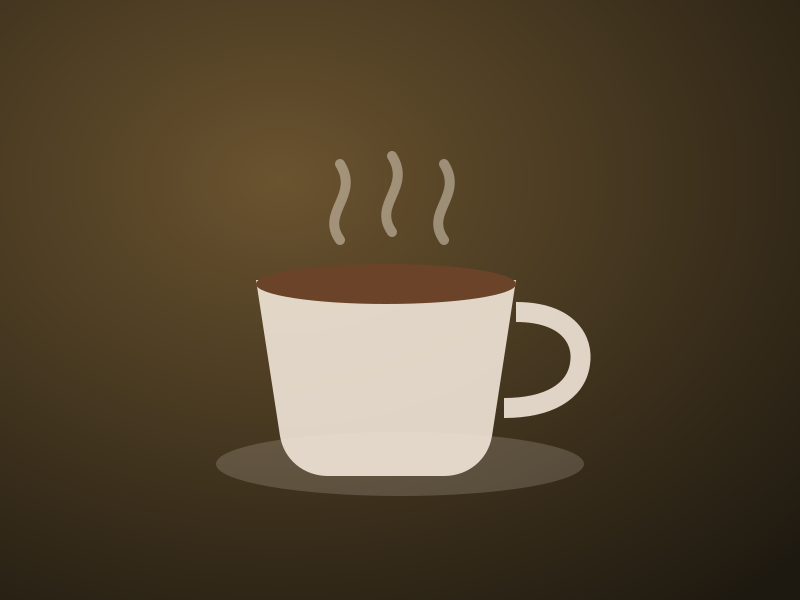

…
کافه سایه
قهوهی تخصصی با دانهی تازهرُست، کیکهای خانگی و شبهایی آرام زیر نور گرم.
درباره ما
جایی برای مکث، میان شلوغی شهر
کافه سایه از سال ۱۳۹۸ با یک دستگاه اسپرسو و چند میز چوبی شروع شد. امروز هم همان حال را داریم: قهوهای که با حوصله دم میشود و فضایی که میشود در آن ساعتها نشست.
🫘
دانهی تازهرُستهر هفته رُست میکنیم؛ عربیکای اتیوپی و کلمبیا
👨🍳
باریستای حرفهایدمِ دقیق، لاتهآرت و پیشنهاد متناسب با سلیقهی شما
🕯️
فضای دنجنور گرم، موسیقی آرام و وایفای رایگان

پیشنهاد ما
محبوبهای کافه
منوی دیجیتال
منو روی گوشی شما
سر میز، کد QR را با دوربین گوشی اسکن کنید تا منوی کامل با قیمتهای بهروز را ببینید. بدون نصب برنامه.
ساعات کاری
هر روز هفته، منتظر شما هستیم
صبحانه تا ساعت ۱۲ ظهر سرو میشود. آخر هفتهها تا نیمهشب باز هستیم.
…